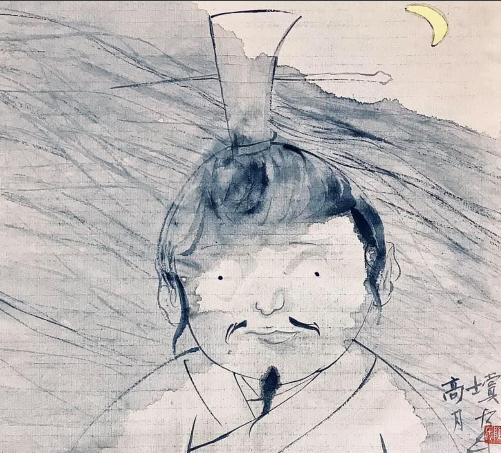

01
飞翔矩阵
年代
这是一件动态装置作品，作品单元在MCU的控制下可以呈现某种韵律的运动，色彩、形态、运动在此互相关联。单元形态取材于大雁，也是在火神祝融的感召下构建了作品。

生于中国湖南，本科、硕士毕业于广州美术学院（中国），博士毕业于中部大学（韩国）。
写诗也写代码，将图视为符也视符为图，关注物象在意象中的映射，也关注物象在现实中的构建。
主要以数字媒体、互动装置，电子游戏等艺术载体进行创作。
年代
这是一件动态装置作品，作品单元在MCU的控制下可以呈现某种韵律的运动，色彩、形态、运动在此互相关联。单元形态取材于大雁，也是在火神祝融的感召下构建了作品。
年代
这是一件以纯代码生成的数字作品，作品实时运算，尺寸可变。
描述整体事件的此消彼长，息息相关。
年代
这是一件小型的互动装置，以画凳上的两个游戏摇杆控制中间的LED矩阵，合适的动作会引发矩阵的某种具备排列的闪灭。
年代
这是一件物理世界、数字世界与精神世界互相映射的例子。王小波的小说曾经影响过我的青年时代，小说中的主人公陈清扬、我曾经使用过的旧电脑与游戏摇杆形成三者的对应。
年代
这是以物形诗系列作品中的一件。作品把真实物体的形态映射为某个字符，然后把字符像诗歌一样在上海的一个废弃的工厂煤道内进行呈现。
年代
这是以物形诗系列作品中的一件。在某段时间我比较坚定地认为一切都是形式（彻底意义上的形式），所以构建了一个电子游戏机来体现此概念（游戏机的机体是一个废弃的教堂椅）。
年代
这是早年的一件互动装置作品，作品内运行着一个小型的ANN（人工神经网络）以此来应对外部的互动。
年代
我把一只数字虫子（带有简单的ANN）装进了一根废弃的老树中。观众使用游戏摇杆与虫子交互。这实际上也是一件电子游戏作品。